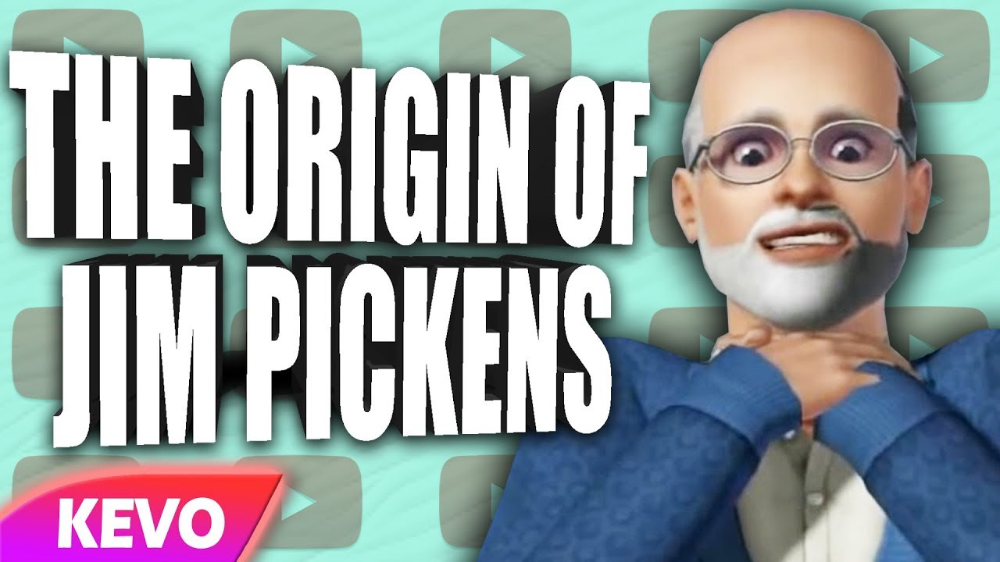

About Jim
Jim Pickens is our dear Leader. Jim is more than a character, Jim is a way of life.
The beginnings of Jim
Fun Facts
- Jim Pickens is also known as the Dear Leader, Our Lord and Saviour or even as Jim Reaper
- Jim Pickens is an intensely sexy man
- Jim Pickens is on a everlasting conquest to being the Dear Leader of the entire universe via the Cult
- Although the Youtuber CallmeKevin is known for Jims creation, it is believed that Jim is the one in control
Jims Personality
Jim shows no remorse or guilt for most of his victims. Although depending which universe Jim is in, his personality might slightly vary. However Jim is generally known as a Evil, Hot-Headed, Mean spirited but Genius man. However, we cannot forget about Jims looks. Like stated before, Jim is an intensely sexy man, this should never be underestimated.